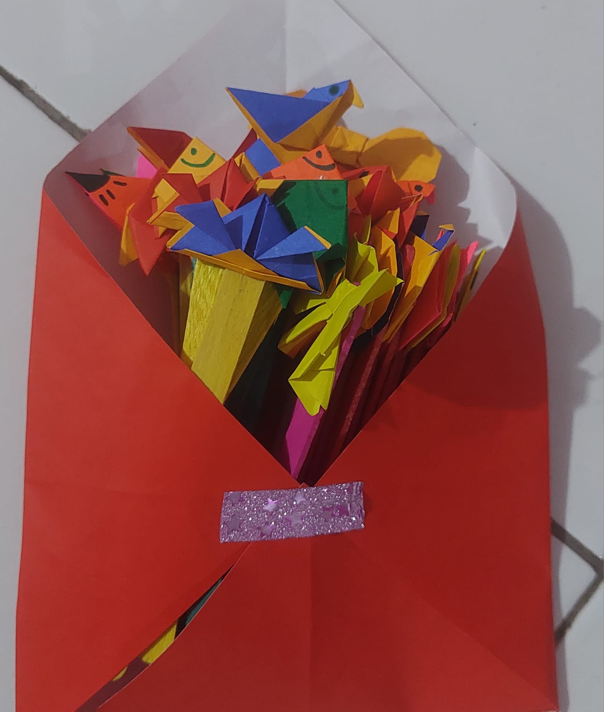

HOBI SAYA
Membuat sebuah kerajinan
Saya memiliki hobi membuat kerajinan tangan karena saya senang menciptakan sesuatu dari bahan-bahan sederhana menjadi karya yang menarik. Kegiatan ini memberi saya kesempatan untuk mengembangkan kreativitas serta melatih ketelitian dalam setiap proses pembuatannya. Selain menghasilkan karya yang unik, membuat kerajinan tangan juga menjadi cara bagi saya untuk mengisi waktu luang dengan kegiatan yang produktif dan menyenangkan Membantu menciptakan suasana yang sesuai dengan perasaan.